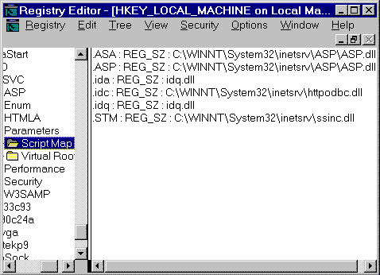

|
| ||
|
| ||
Jeff Brown
Rafael M. Muñoz
Microsoft Corporation
June 9, 1997
The following article was originally published in the Site Builder Magazine (now known as MSDN Online Voices) "Web Men Talking" column.
Contents
Precise positioning, please - Laying out HTML objects
Follow the map - Adding to the IIS script map
Money is always an issue - Creating ActiveX components
You're hired! - Using Internet Explorer 4.0 technologies
A square peg in a round hole - JScript versus JavaScript
You aren't from around here, are you? - Determining client domain name
What a way to begin a week! The Web Men have worked themselves well into the caffeine jitters to bring you this column in time for your morning coffee. Mondays will never be the same.
Do you have your cup in hand? Are you sitting down? Because this time, J & R delve into some really scary stuff, such as client domain names (the who), HTML object layout (the where), and compatibility (you figure that one out). For the not-so-faint of heart, they move into the murky realms of IIS script mapping and teen (programming) angst. Our guys go where your questions take them--so keep those e-mails coming, and as Bette Davis once said, "Fasten your seatbelts ..."
Dear Web Men:
What is the best way to get precise layouts of pictures and text for a Web page? I currently use FrontPage 97, but do have difficulty getting my pictures exactly where I want them to go.
Any suggestions?
Silverbrain
The Web Men reply:
Hmmm, so is Silverbrain your actual name or your e-mail alias? This is the only name we could come up with from your e-mail address, since you didn't sign your e-mail or give us any other appellation! Everyone go for the gusto--don't be shy--and give us your name. In some cases, this might be your big chance to get your name out there in the limelight of the Internet!
All right, you want to control the precise positioning of objects on your Web pages. Well, you came to the right place; there are many ways to lay out the contents of your pages so that everything is just right. We have frames, floating frames, tables, and even style sheets you can use to provide a consistent template look across your site.
For an overall general layout, we suggest using frames, floating frames, and style sheets.
But for those precise locations on your page, or even within a frame, you will want to use tables. You can find a wealth of information on using tables in the Site Builder Workshop DHTML, HTML & CSS and Design areas, which offer assistance--including samples and step-by-step instructions--for the beginning Webmaster on up to the advanced.
After reading these sections, we even created a sample page to show how easy it is.
Did someone say, "Hey what about Internet Explorer 4.0 and Dynamic HTML?" We hope so, because with the coming of Dynamic HTML, you will have the luxury of x-, y-, and z-order positioning of HTML elements. This capability will allow designers to place elements on their Web pages in precise locations. You will even be able to overlap elements by placing them in different z-planes.
To find out more about this, check out the Dynamic HTML site, and be sure to download Internet Explorer 4.0. And for more information on using style sheets with Internet Explorer 4.0, read MSDN Online's Site Lights columnist Nadja Vol Ochs on Is Your Site Made with Style?
Dear Web Men:
I've created my own ISAPI extension to serve up some dynamic content and want to have it execute anytime I reference a file with a .xxx extension. What steps do I have to take to make it happen?
Mark Puckett
The Web Men reply:
Well, Mark, you just need to add some settings to the Windows registry. You have to create a script mapping to get Internet Information Server (IIS)  to run a particular program or ISAPI
to run a particular program or ISAPI  application whenever a user requests a certain file type.
application whenever a user requests a certain file type.
This is covered in Chapter 10 of the IIS product documentation, "Configuring Registry Entries." Here are the steps from "Associating Interpreters with Applications (Script Mapping)":
To configure additional script mappings
c:\myapps\app.exe %s %s
A %s in the value represents the URL of the file mapped to the local file system on the server. For example, if the request from the user was http://www.company.com/file.xyz?name=fred, then in a default IIS setup, %s would represent c:\inetpub\file.xyz. A second %s represents the parameters to the URL--the query string. In this example, it would be name=fred.
For an ISAPI application, you don’t need to use %s to give the filename to the program, because the filename is already passed to it in this form through the PATH_TRANSLATED server variable.
Here is the IIS script map as viewed in the Registry Editor (Regedt32.exe):

Dear Web Men:
I have recently begun a Web page and am thinking about using ActiveX components in it. My question is: Can I use Visual C++ 1.0 to create ActiveX components, and, if so, where can I find out how? (BTW: If you are thinking about suggesting that I get a new version of C++, don't, because I am 15, and don't have that kind of money right now.)
David
The Web Men reply:
David, it sounds like you think that this money problem will get better as you grow older than 15. Sorry to disappoint you, but someone's got to tell you the truth. So why not us, being the straight-shooting kind of fellas that we are? The fact is, it will only get worse! The more money you get, the more you will spend. We don't need to give you all the gory details.
You want to use yesterday's compiler to create today's technology, ActiveX components. From your question, we think you already know the answer: Microsoft Visual C++ 1.0 cannot create ActiveX components. But hey, don't go yet--we have some good news. Can you say free software? Yes, there is still hope for you and the many other financially challenged programmers of all ages. At the Tools area you will find a nifty tool called the Visual Basic 5.0 Control Creation Edition. This tool will help you to create those great ActiveX components that you are dreaming of, and you won't even have to upgrade your Visual C++ version. Who knows? You might even want to change over to the Visual Basic world after using the Control Creation Edition; the choice is yours. If you prefer to stick with Visual C++, we suggest that, as as your finances get better, you upgrade your current version to at least the new Visual C++ 5.0  , especially if you want to keep testing today's technology.
, especially if you want to keep testing today's technology.
Now if you are going to place your new controls on the Web, you will want to also become familiar with Authenticode™, Microsoft's technology for digitally signing files on the Internet. You can find information on this topic in the Security & Cryptography area of the MSDN Online Web Workshop. Look under the Authenticode section.
Dear Web Men:
Greetings from a Level 2 Site Builder:
Our company is a national technical and IS recruiting firm.
I am currently searching for a solution to scan resume-posting sites, bring down resumes, filter them, query them, and store them.
The ideal solution will include "smart" push technology to bring the resume to the desktop of the recruiter. It is our opinion that this whole solution can and should be Web-based.
Can Index Server function as the search facility and what contingency of Microsoft products would you recommend to put this solution together using (Windows) NT 4.0 and IIS as the platform?
Richard P.
The Web Men reply:
Microsoft Index Server cannot really be used as the search facility for this sort of system, Richard. Its purpose is to allow users of an IIS server to index and search HTML and other content, but not to go out and actively search for content on assorted servers on the Internet. However, several Internet Explorer 4.0 technologies fit nicely into this scheme.
The first step, undoubtedly the hardest, would be to find or build the tool that would pull resumes into a local candidate database (i.e., local to your company). Given the specialized nature of what you need, we're not sure you will find a prebuilt tool to do this. But you could probably build a custom tool of this sort using the WinInet API. Once the resumes were categorized in a database, it would be relatively simple to get the information to recruiters, and push it to their desktop.
The push part could be accomplished through desktop components. A particular desktop component could present a list of candidates for a particular job type or position. Desktop components would make it easy for recruiters to automatically receive updated candidate data at scheduled times. The recruiter could be sure that he or she was getting the most recent information from the database. Desktop components would also allow the recruiter to switch easily between different job types. Several different desktop components could be installed and visible on the desktop, each one tailored to find candidates for different job types.
By including data from the candidate database using data binding, the desktop component would present a list of candidates whose resumes indicate they may be appropriate for that job type. Information from their resumes would have already been categorized in the database, so the main difference in the desktop components would be a difference in the database query used to create the page. The desktop component could list key data on each candidates, such as name, years of experience, availability, and so forth. To get all the details on a particular candidate, the recruiter could select the candidate's name, and get a new browser window with more details on that candidate--the equivalent of a resume. Data binding would enable the recruiter to sort and order candidates easily without having to re-query the database.
No matter how you slice it, building a system like this is going to be a major effort. Good luck with it.
Editor's note: Be sure to keep current with the latest updates to the WinInit API, Desktop items (formerly, desktop components), and data binding.
Dear Web Men:
When will it be possible to upgrade the JScript™ 1.0 in Internet Explorer 3.02 to be compatible with JavaScript 1.1?
I am a Webmaster, and I enjoy using the new JavaScript functions, but I cannot if I desire them to still work for the users of Internet Explorer 3.02. Any possible dates in the future when this change might be implemented, or are there any other things I can do to solve my problem?
- thanks
Aaron B.
The Web Men reply:
You want compatibility, Aaron? You mean you don't like using that ¾-inch socket on that metric bolt? And you don't enjoy trying to fit a "square peg into a round hole?" We hear that duct tape and safety wire can fix pretty much anything. Have you tried chewing gum? You are right: Incompatibilities make it hard, especially when you are trying to write script with something like JScript and JavaScript. And, yes, some inconsistencies between the two exist at this time.
Here is how it stands today: The current version of JScript  is version 2.0, which is compatible with JavaScript version 1.0. You mentioned using some of the new JavaScript functions available only in version 1.1, and as you pointed out, Internet Explorer 3.02
is version 2.0, which is compatible with JavaScript version 1.0. You mentioned using some of the new JavaScript functions available only in version 1.1, and as you pointed out, Internet Explorer 3.02  doesn't support those yet.
doesn't support those yet.
Don't give up hope; no, we aren't sending you any duct tape. But we have verified that Internet Explorer 4.0  is compatible with the JavaScript version 1.1 specifications. This came from our direct, in-house sources, and how could they be wrong? But then we also received this information from another source to which we would like to point everyone. The Cobb Group provides a free resource, ZDTips™
is compatible with the JavaScript version 1.1 specifications. This came from our direct, in-house sources, and how could they be wrong? But then we also received this information from another source to which we would like to point everyone. The Cobb Group provides a free resource, ZDTips™  , which distributes software tips through e-mail. Being savvy guys, we absorb information from every possible source--and as luck would have it, the very week that we got your mail, Aaron, ZDTips sent out the following:
, which distributes software tips through e-mail. Being savvy guys, we absorb information from every possible source--and as luck would have it, the very week that we got your mail, Aaron, ZDTips sent out the following:
Internet Explorer Tip
Sent out week of May 12, 1997
Subject: IETips JavaScript errors in Internet Explorer 3.0
"When viewing JavaScript-enabled Web sites, with Microsoft Internet Explorer 3.0, it's not uncommon to receive an error message in an Internet Explorer Script Error window. Microsoft released Internet Explorer 3.0 before Netscape published its proprietary JavaScript 1.1 specification. For this reason, Microsoft refers to Internet Explorer's JavaScript implementation as "Jscript", which isn't completely compatible with Netscape's JavaScript. Internet Explorer 4.0, the latest release of the browser, is compatible with the specification. If you use Internet Explorer 4.0 to view the Web site in question, you shouldn't receive an error message."
How's that for service? Check out this fantastic resource to see what other topics it covers.
Dear Web Men:
I wish to write a server-side script to alter the contents of a page depending on the last part of the domain name (e.g., .nz, .au, .uk, etc). Is the client's domain name available to an Active Server Pages (ASP) script?
Jeff Torkington
The Web Men reply:
Nope, the client’s domain name (i.e., example.microsoft.com) typically is not available to server-side scripts, including ASP applications. This is a very interesting question, though. It definitely would be cool to send clients different content depending on their top-level domain names (last part of the name), or other parts of the domain name.
You listed different country codes as examples: New Zealand (.nz), Australia (.au), and the United Kingdom (.uk). In addition to returning content to clients based on country, you could also return content for clients in the United States based on the type of organization: commercial (.com), educational (.edu), non-profit (.org), and so forth. It would be great to make use of this information, as in the following examples:
Based on your domain name, it appears that you may be located in the United Kingdom. You may want to stop by our local office in London.
Greetings, it appears that you are an employee or student at an educational institution. We have some promotional offers for students and educational institutions which may interest you.
The good news? It is possible to get the domain name of the client, but it requires a significant amount of work. An ambitious CGI or ASP application can use the information that it has to try to figure out the client’s domain name.
A server script receives the client computer's IP address. This is the cryptic numbers-separated-by-periods address, such as 157.56.107.9. The IP address is passed to a script in the REMOTE_ADDR server variable. The idea is to use the IP address to do a reverse lookup, and find the corresponding fully qualified domain name (FQDN). Once you have the FQDN, you can examine the different parts of it, including the top-level domain name.
With ASP, this can be accomplished by creating your own server component that calls the Windows Sockets function named gethostbyaddr. This function takes an IP address and attempts to return the corresponding domain name by sending requests on the network for this information. The process can be optimized, too, so the server component can avoid having to look up the domain name each time.
(Okay, the bad news is that we leave the implementation of this component as an exercise for the reader.)
Jeff Brown, when not forcing family and friends to listen to Zydeco and country blues music, provides technical support for the Microsoft MSDN Online with a smile.
Rafael M. Muñoz (the even bigger smile above) is a part-time Adonis, and full-time support engineer for Microsoft Technical Support. He takes it very, very personally every time you flame Microsoft.
Did you find this article useful? Gripes? Compliments? Suggestions for other articles? Write us!
© 1999 Microsoft Corporation. All rights reserved. Terms of use.